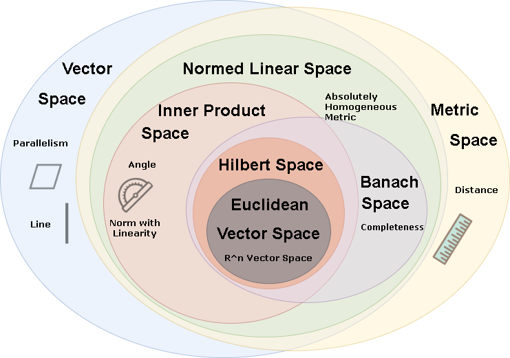

A space consists of a set of selected points, with a set of selected relationships between those points. The points could be elements of a set, functions on another space, or subspaces of another space. The relationships define the nature of the space.
According to Kevin Carlson,
You could think of "structures" as places we do algebra, and "spaces" as places we do geometry. Then a lot of great mathematics has come from passing from structures to spaces and vice versa, as when we look at the fundamental group of a topological space or the spectrum of a ring.
As mentioned in TAB1, space and structure share similar definition; I just copy the definition of structure here.
A structure can be defined as a triple \(\mathcal{A} = (A, \sigma, I)\) where \(A\) means domain, \(\sigma\) means signature, and \(I\) means interpretation function.
The domain is an arbitrary set. Sometimes the notation \(\operatorname{dom}(\mathcal A)\) or \(|\mathcal{A}|\) is used for the domain of \(\mathcal {A}\); Whereas sometimes \(\mathcal {A}\) refers both to the structure and its domain.
The signature \(\sigma =(S,\operatorname {ar} )\) is a set \(S\) of function symbols (like +, ×, 0, 1) and relation symbols (like \(\ge\), \(\in\)) along with a function \(\text{ar:}\ S\to \mathbb {N}_{0}\) that assign a natural number \(n\) as arity to each symbol. A nullary function symbol is called a constant symbol.
The interpretation function assigns functions and relations to each symbol of the signature.

History
In ancient Greek, "space" was a geometric abstraction of the reality. Euclid assumed a small set of intuitively appealing axioms, and deducing many other propositions from these. Euclidean Geometry is also known as Plane Geometry.
Euclidean geometry has two fundamental types of measurements: angle and distance.
- The angle scale is absolute, and the right angle is the basic unit; For example, a 45-degree angle would be referred to the half of a right angle.
- The distance scale is relative; A line segment with a certain nonzero length is treated as the unit, then distances are expressed in relation to it.
- Measurements of area and volume are derived from distances.
Some well known results
| Name | Theorem | Diagram |
|---|---|---|
| Congruence of triangles | Congruence of triangles is determined by specifying two sides and the angle between them (SAS), two angles and the side between them (ASA) or two angles and a corresponding adjacent side (AAS). | |
| Triangle angle sum | The sum of the angles of a triangle is equal to a straight angle (180 degrees). | |
| Pythagorean theorem | In any right triangle, the area of the square whose side is the hypotenuse is equal to the sum of the areas of the squares whose sides are the two legs. |  |
| Thales' theorem | If A, B, and C are points on a circle where the line AC is a diameter of the circle, then the angle ABC is a right angle. |
Analytic geometry was adopted by René Descartes in 1637. He proposed a coordinate system to definie and represent geometrical shapes in a numerical way, and extract numerical information from those definitions and representations. It's not only compatible with the geometric notions like distance and angle, but also arised new concepts like tangent, normal, intersection etc.
Two equivalence relations are defined in Euclidean geometry: congruence and similarity.
- Translations, rotations and reflections transform a figure into congruent figures
- Homotheties transform a figure into similar figures. (shown below)
A third equivalence relation was introduced in projective geometry by Gaspard Monge in 1795. All ellipses, parabolas, and hyperbolas, could turn into circles under appropriate transformations; they all are projectively equivalent figures.
Some noticeable differences between Euclidean geometry and Projective geometry are:
- Parallel lines can be said to meet in a point at infinity.
- Distances and angles cannot appear in theorems of projective geometry since no angles or distance are guaranteed to be preserved after perjective transformation.
- The incidence structure and the cross-ratio are fundamental invariants.
In mathematics, incidence structure is an abstract system consisting of two types of objects and a single relationship between these types of objects.
At that time, mathematical theories still described their objects by some of their properties, which are treated as axioms at the foundations of the theory.
In the 19th century, some mathematician stated and proved that under some condition, the sum of the three angles of a triangle is well-defined but different from the classical value (180 degrees). This discovery forced the abandonment of the pretensions to the absolute truth of Euclidean geometry.
The essential difference is the nature of parallel lines. Suppose within a two-dimensional plane, there is a line \(l\) and a point \(A\) that not on \(l\).
- In Euclidean geometry, for any given line \(l\) and a point \(A\) which is not on \(l\), there is exactly one line through A that does not intersect \(l\).
- In non-Euclidean geometry, for example hyperbolic geometry, there are infinitely many lines through A not intersecting l; while in elliptic geometry, any line through \(A\) intersects \(l\).
This discovery forced the abandonment of the pretensions to the absolute truth of Euclidean geometry. It showed that axioms are not "obvious", nor "implications of definitions"; They are just hypotheses.
The original space investigated by Euclid is now called three-dimensional Euclidean space. Its axiomatization and primitive notions (such as "point", "between", "congruent" etc.) was reformed with Hilbert's axioms, Tarski's axioms and Birkhoff's axioms; Its theorems with computations were described via invariants of transformation groups.
Three-dimensional Euclidean space is defined to be an affine space; Three-dimensional projective space is defined as the space of all one-dimensional subspaces (that is, straight lines through the origin) of a four-dimensional vector space.
Every mathematical object parametrized by \(n\) real numbers could be treated as a point of the n-dimensional space of all such objects. Then a space now consists of selected mathematical objects treated as points, and selected relationships between these points. Therefore, spaces are just mathematical structures of convenience.
Relevant Concepts
Field
The best known fields are the field of rational numbers. Formally, fields is a set, along with two binary operations (addition and multiplication), two unary operations (yielding the additive inverse and multiplicative inverse), and two nullary operations (the constants 0 and 1). For all \(a, b, c\in \mathbb{F}\), the following properties must be satisfied:
| Axiom | Explanation |
|---|---|
| Associativity of Addition | \(a + (b + c) = (a + b) + c\) |
| Commutativity of Addition | \(a + b = b + a\) |
| Identity of Addition | \(a + 0 = a\) |
| Inverse of Addition | For each \(a\) in \(\mathbb{F}\), there exists an element in \(\mathbb{F}\), denoted \(−a\), \(\text{s.t. } a + (−a) = 0\) |
| --- | --- |
| Associativity of Multiplication | \(a · (b · c) = (a · b) · c\) |
| Commutativity of Multiplication | \(a · b = b · a\) |
| Identity of Multiplication | \(a · 1 = a\) |
| Inverse of Multiplication | For each \(a \ne 0\) in \(\mathbb{F}\), there exists an element in \(\mathbb{F}\), denoted by \(a^{−1}\) or \(1/a\), $ a · a^{−1} = 1 $ |
| --- | --- |
| Distributivity of Multiplication over Addition | $ a · (b + c) = (a · b) + (a · c) $ |
Vector Space
A vector space over a field \(\mathbb{F}\) is a set \(V\) together with two binary operations (vector addition and scalar multiplication) and eight axioms. Elements of \(V\) are called vectors. Elements of \(\mathbb{F}\) are called scalars.
For all \(\mathbf{u}, \mathbf{v}, \mathbf{w}\in V\) and \(a, b\in \mathbb{F}\), the following must be satisified:
| Axiom | Explanation |
|---|---|
| Associativity of Addition | \(\mathbf{u} + (\mathbf{v} + \mathbf{w}) = (\mathbf{u} + \mathbf{v}) + \mathbf{w}\) |
| Commutativity of Addition | \(\mathbf{v} + \mathbf{u} = \mathbf{u} + \mathbf{v}\) |
| Identity of Addition | \(\mathbf{v} + \mathbf{0} = \mathbf{v}\) |
| Inverse of Addition | For all \(\mathbf{v}\) in \(V\), there exists an element in \(\mathbb{V}\), denoted \(−\mathbf{v}\), \(\text{s.t. } \mathbf{v} + (−\mathbf{v}) = \mathbf{0}\) |
| --- | --- |
| Compatibility of scalar and field multiplication | \(a · (b · \mathbf{v}) = (a · b) · \mathbf{v}\) |
| Identity of scalar multiplication | \(\mathbf{1} ·\mathbf{v} = \mathbf{v}\) |
| Distributivity with respect to vector addition | \(a(\mathbf{u} + \mathbf{v}) = a\mathbf{u} + a\mathbf{v}\) |
| Distributivity with respect to field addition | \((a + b)\mathbf{v} = a\mathbf{v} + b\mathbf{v}\) |
Linearity
A linear map or linear function \(f(x)\) is a function that preserve sums and scalar multiplication. It satisfies:
- Additivity: \(f(x + y) = f(x) + f(y)\)
- Homogeneity of degree 1: \(f(αx) = α f(x) \forall \alpha\).
Real coordinate space
A real coordinate space of dimension n, written \(R^n\) is a special Vector Space. For any natural number \(n\), the set \(R^n\) consists of all n-tuples of real numbers. An element of \(R^n\) could be written as \((x_{1},x_{2},\ldots ,x_{n})\) where each \(x_i\) is a real number.
Any n-dimensional real vector space is isomorphic to the vector space \(R^n\).
Affine Space
An affine space is a set \(A\) together with a vector space \(\overrightarrow{A}\), and an addition operation such that \(+ : A\times \overrightarrow{A}\to A\). The elements of \(A\) are called points and the elements of \(\overrightarrow{A}\) are called translations. Hence \(\overrightarrow{A}\) is also called its space of translations.
For all \(a, b, c \in A, \mathbf{v},\mathbf{w} \in \overrightarrow{A}\), the following properties must be satisfied:
| Axiom | Explanation |
|---|---|
| Right identity | \(a + \mathbf{0}= a\), where \(\mathbf{0}\) is the zero vector in \(\overrightarrow{A}\) |
| Associativity | \((a + \mathbf{v})+ \mathbf{w} = a + (\mathbf{v} + \mathbf{w})\) (the second \(+\) is the addition in \(\overrightarrow{A}\)) |
| Free and transitive action | For every \(a\), the mapping is a bijection |
| Corollary | Explanation |
|---|---|
| Existence of one-to-one translations | For every \(\mathbf{v}\), the mapping is a bijection |
| Subtraction | For every \(a, b\), there exists a unique \(\mathbf{v}\) denoted by \(b – a, \text{s.t. } b = a + \mathbf{v}\) |
| Subtraction and Weyl's axioms | For every \(a, \mathbf{v}\), there is a unique point \(b\) such that \(b - a = \mathbf{v}\) \((c - b) + (b - a) = c - a\) |
They define the concepts of lines, subspaces, and parallelism. In an affine space, there is no distinguished point that serves as an origin; No vector has a fixed origin and no vector can be uniquely associated to a point.
Affine subspaces and parallelism
An affine subspace \(B\) of an affine space \(A\) is a subset of \(A\) such that \(\overrightarrow{B}=\{b-a\mid b\in B, a\in B\}\) is a linear subspace of \(\overrightarrow{A}\). The linear space \(\overrightarrow {B}\) is called the direction of \(B\). Suppose \(P\) is a point of \(B\), then \(F=\{P+\mathbf{v} \mid \mathbf{v}\in \overrightarrow {F}\}\)
Two subspaces that share the same direction are said to be parallel.
Lines and segments
A line is a affine subspace of dimension one. A line passing through two distinct points \(P\) and \(Q\) could be with the form
\(\{ P+ \lambda {\overrightarrow {PQ}}\mid \lambda \in \mathbb {R} \}\) or \(\{O+(1-\lambda ){\overrightarrow {OP}}+\lambda {\overrightarrow {OQ}}\mid \lambda \in \mathbb {R} \}\) where \(O\) is an arbitrary point (not necessary on the line).
It follows that there is exactly one line that passes through (contains) two distinct points. This implies that two distinct lines intersect in at most one point.
The line segment joining the points \(P\) and \(Q\) is the subset of the points denoted \(PQ\) or \(QP\) such that \(PQ=QP=\{P+\lambda {\overrightarrow {PQ}}\mid 0\leq \lambda \leq 1\}\)
Validity of Addition and Subtraction
| Operation | Vector Space | Affine Space |
|---|---|---|
| Vector + Vector | Vector | Vector |
| Vector + Point | N/A | Vector |
| Vector - Vector | Vector | Vector |
| Point + Point | N/A | N/A |
| Point - Point | N/A | Vector |
Metric Space
A metric space is an ordered pair \((M,d)\) where \(M\) is a set and \(d\) is a metric such that \(d : M\times M\to [0,\infty)\) where \([0,\infty )\) is the set of non-negative real numbers. Metric defines the distance between each pair of point elements on \(M\).
Metric
For all \(x,y,z\in M\), the following three properties must be satisfied:
- Identity of Indiscernibles: \(d(x,y)=0\Leftrightarrow x=y\)
- Symmetry: \(d(x,y)=d(y,x)\)
- Subadditivity or triangle inequality: \(d(x,y)\leq d(x,z)+d(z,y)\)
Completeness
A metric space \((X, d)\) in which every Cauchy sequence converges to an element of \(X\) is called complete.
Given a metric space \((X, d)\), a sequence \(x_{1}, x_{2}, x_{3}, \ldots\) is called a Cauchy sequence if for any real number \(\epsilon > 0\), there exists a positive integer \(N\) such that \(d(x_{m}, x_{n}) < \epsilon \text{ , } \forall m, n > N\)
The real numbers are complete under the metric induced by the usual absolute value. There are some noticeable counter examples:
- The rational numbers \(\mathbb{Q}\) are not complete given usual distance since some of them may converge to a irrational number. For example, the sequence defined by \(x_{0}=1\), \(x_{n+1}={\frac{ x_{n} + {\frac {2}{x_{n}}} } {2}}\) will converge to \(\sqrt{2}\)
- The open interval in the set of real numbers with an ordinary distance in \(\mathbb{R}\) is not a complete space as its limit doesn't belong to the interval. For example, given the interval \(X = (0, 2)\), the sequence \(x_{n}=1/n\) will converge to \(0\).
Isometry and Isomorphic
An isometry is a distance-preserving transformation between metric spaces. Formally, suppose \(X\) and \(Y\) be metric spaces with metrics \(d_X\) and \(d_Y\). A map \(f : X \to Y\) is isometry if
\[d_{Y}(f(a),f(b)) = d_{X}(a,b) \text{ } \forall a,b \in X\]
The properties of metric imply injection (\(\forall a,b \in X,\;\;f(a)=f(b)\Rightarrow a=b\)).
Two metric spaces \(X\) and \(Y\) are called isometric if there is a bijective isometry from \(X\) to \(Y\). Like any other bijection, a global isometry has a function inverse. The inverse of a global isometry is also a global isometry.
Normed vector space
A normed vector space, as the name shown, is a vector space \(V\) with a norm \(\lVert · \rVert\). A norm induces a distance by \(d(x,y) = \lVert y-x \rVert\). Therefore, a normed vector space is a metric space.
Norm
Given a vector space \(V\) over a field \(\mathbb{F}\) of \(\mathbb{R}\) or \(\mathbb{C}\), a norm on set \(V\) is a function such that
\[\lVert · \rVert : V\to [0,\infty)\]
where \([0,\infty )\) is the set of non-negative real numbers.
For all \(\alpha\in \mathbb{F}\) and all \(\mathbf{u}, \mathbf{v}\in V\), the following three properties must be satisfied:
| Axiom | Explanation |
|---|---|
| Triangle Inequality | \(\lVert \mathbf{u} + \mathbf{v} \rVert ≤ \lVert \mathbf{u}\rVert + \lVert \mathbf{v} \rVert\) |
| Positive Definite | \(\lVert \mathbf{v} \rVert = \mathbf{0} \Leftrightarrow \mathbf{v} = \mathbf{0}\) |
| Homogeneous/Scalable | \(\lVert \alpha \mathbf{v} \rVert = \lvert a \rvert · \lVert \mathbf{v} \rVert\) |
Inner product space
An inner product space is a vector space \(V\) over the field \(\mathbb{F}\) together with an inner product. The inner product induces a norm by \(\lVert x \rVert = {\sqrt {\langle x,x\rangle }}\). Therefore, an inner product space is normed vector space as well as a metric space.
Inner Product
Given a vector space \(V\) over a field \(\mathbb{F}\) of \(\mathbb{R}\) or \(\mathbb{C}\), a inner product on set \(V\) is a function such that
\[< · , · > : V \times V \to F\]
For all vectors \(\mathbf{x}, \mathbf{y}, \mathbf{z} \in V\) and all scalars \(\alpha \in \mathbb{F}\), the following three properties must be satisified:
| Axiom | Explanation |
|---|---|
| Conjugate symmetry | \(\langle x,y\rangle=\overline{\langle y,x\rangle}\) |
| Linearity in the first argument | \(\begin{aligned}\langle ax,y\rangle &=a\langle x,y\rangle \\\langle x+y,z\rangle &=\langle x,z\rangle +\langle y,z\rangle \end{aligned}\) |
| Positive definite | \(\langle x,x \rangle > 0,\quad x\in V\setminus \mathbf {0}\) |
Induced Properties
For all \(\mathbf{x},\mathbf{y},\mathbf{z}\in V\):
| Axiom | Explanation |
|---|---|
| Cauchy–Schwarz inequality | \(\lvert\langle \mathbf{x},\mathbf{y}\rangle\rvert \leq \lvert \mathbf{x} \rvert \lvert \mathbf{y} \rvert\) with equality if and only if \(\mathbf{x}\) and \(\mathbf{y}\) are linearly dependent. |
| Polarization identity | \(\lVert \mathbf{x} + \mathbf{y} \lVert^{2} = \lVert \mathbf{x} \rVert^{2} + \lVert \mathbf{y} \rVert^{2} + 2 \operatorname{Re} \langle x,y\rangle\) |
| Orthogonality | Two vectors are orthogonal if their inner product is zero. In a inner product spaces of finite dimension over the reals, the inner product allows defining the angle of two nonzero vectors by \(\angle(\mathbf{x},\mathbf{y})=\arccos{\frac {\langle \mathbf{x},\mathbf{y}\rangle }{\lVert\mathbf{x}\rVert\lVert\mathbf{y}\rVert}} \text{, and } 0\leq \angle (\mathbf{x},\mathbf{y})\leq \pi\) |
| Pythagorean theorem | For all \(\mathbf{x}, \mathbf{y} \in V \text{ s.t.} \langle\mathbf{x}, \rangle\mathbf{y} = 0\), then \(\lVert \mathbf{x} \rVert^{2}+\lVert \mathbf{y} \rVert^{2} = \lVert \mathbf{x} + \mathbf{y} \rVert^{2}\) |
| Parseval's identity | If \(\mathbf{x}_1, \ldots, \mathbf{x}_n\) such that \(\langle\mathbf{x}_j, \mathbf{x}_k\rangle = 0 \quad \forall j, k \text{ s.t. } j \ne k\), then \(\sum _{i=1}^{n}\|\mathbf{x}_{i}\|^{2}=\left\|\sum _{i=1}^{n}\mathbf{x}_{i}\right\|^{2}\) |
| Parallelogram law | \(\|\mathbf{x}+\mathbf{y}\|^{2}+\|\mathbf{x}-\mathbf{y}\|^{2}=2\|\mathbf{x}\|^{2}+2\|\mathbf{y}\|^{2}\) |
| Ptolemy's inequality | \(\|\mathbf{x}-\mathbf{y}\|\|\mathbf{z}\|+\|\mathbf{y}-\mathbf{z}\|\|\mathbf{x}\|\geq \|\mathbf{x}-\mathbf{z}\|\|\mathbf{y}\|\) |
Special Space
Banach Space
A complete normed vector space is called Banach Space
Hilbert Space
A complete space with an inner product is called a Hilbert space.
Euclidean vector space
Euclidiean space is an \(\mathbb{R}^{n}\) space equipped with the dot product. All Euclidean spaces of a given dimension are isomorphic.
Euclidean Space
An Euclidean space, denoted by \(E\), is an affine space associated with an Euclidean vector space denoted by \(\overrightarrow{E}\).
Preservation of Properties
| Operation | Line | Parallelism | Length | Angle | Cross-ratio |
|---|---|---|---|---|---|
| Rotation | ✔ | ✔ | ✔ | ✔ | ✔ |
| Translation | ✔ | ✔ | ✔ | ✔ | ✔ |
| Scaling | ✔ | ✔ | ✔ | ✔ | |
| Sheering | ✔ | ✔ | |||
| Projection | ✔ | ✔ |